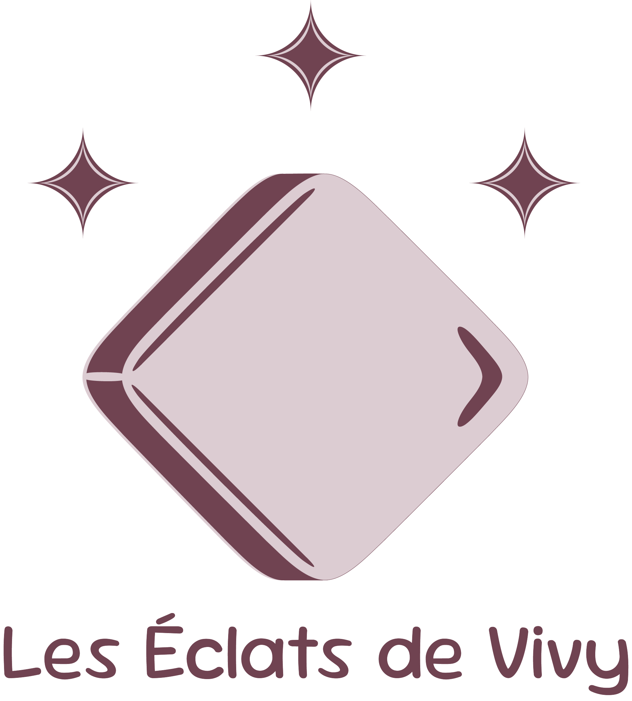
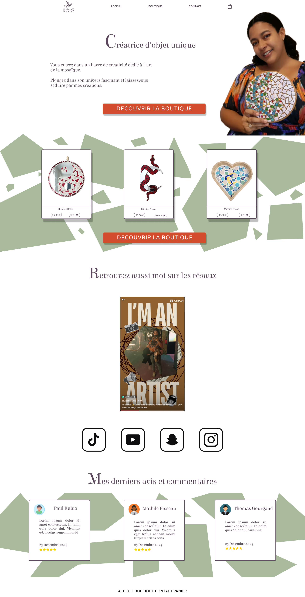

Les Éclats de Vivy
"Les Éclats de Vivy" est mon projet de fin d'année, actuellement en cours de construction. Mon travail s'articule autour de plusieurs axes, allant du design graphique à la création d'un site e-commerce complet. Tout d'abord, j'ai réalisé l'identité visuelle de la marque en prenant en main Adobe Illustrator pour concevoir un logo et ses différentes variantes. J'ai ensuite utilisé Photoshop pour créer des mockups et mettre en situation les produits. Pour enrichir l'aspect visuel, j'ai animé le logo avec After Effects et monté une vidéo de présentation avec Premiere Pro. En parallèle, j'ai travaillé sur l’UX et le Web Marketing en concevant une navigation fluide et intuitive sur Figma, en optimisant le site pour le SEO, et en élaborant une stratégie digitale incluant réseaux sociaux et analyse des performances. J'ai conçu la maquette du site sur Figma, exploré le HTML et le CSS pour tester différentes interfaces, et développé un site e-commerce complet sur WordPress. Ce projet sera finalisé et disponible à partir du 10 juin.